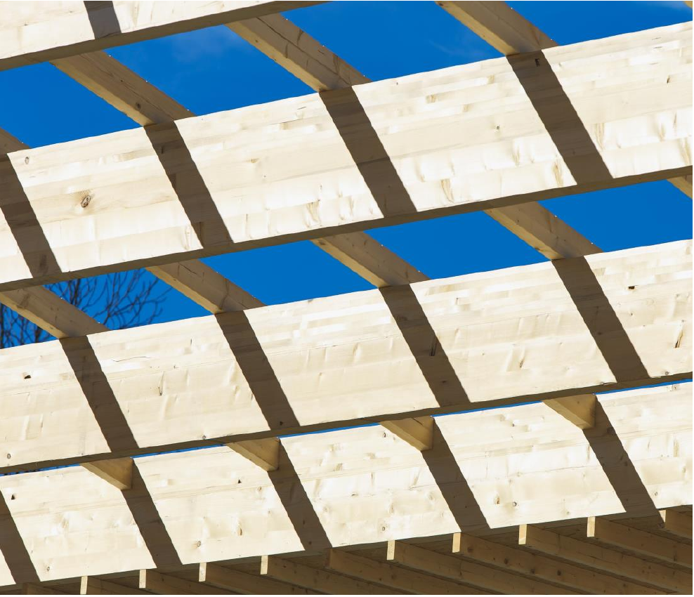
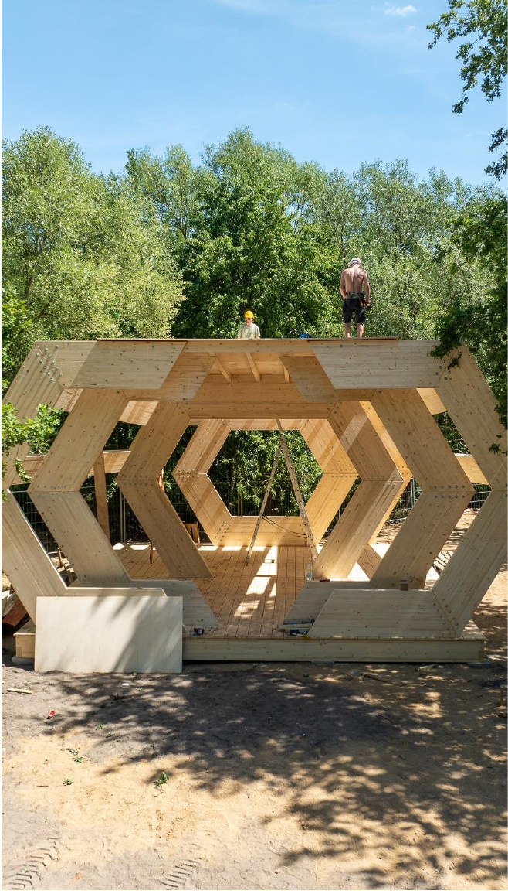

Drewno Konstrukcyjne Lite
Materiał o wysokiej wytrzymałości mechanicznej, przygotowany do bezpiecznych zastosowań konstrukcyjnych.

Polski producent drewna
Łączymy doświadczenie przekazywane z pokolenia na pokolenie z nowoczesną technologią produkcji, dostarczając stabilne, bezpieczne i precyzyjnie przygotowane elementy z drewna.
O firmie
Specjalizujemy się w produkcji certyfikowanego drewna konstrukcyjnego, w tym drewna klejonego warstwowo. Łącząc wiedzę i doświadczenie przekazywane z pokolenia na pokolenie z nowoczesnymi technologiami produkcji, dostarczamy drewno o potwierdzonej nośności, wysokiej stabilności wymiarowej oraz odpowiedniej wilgotności, spełniające obowiązujące normy i wymagania jakościowe.
Do produkcji wykorzystujemy wyłącznie starannie wyselekcjonowany surowiec najwyższej jakości, charakteryzujący się wysoką wytrzymałością mechaniczną. Zaawansowany proces sortowania i kontroli jakości pozwala nam wybrać najlepsze elementy drewna oraz wyeliminować wady, które mogłyby negatywnie wpłynąć na parametry gotowego produktu.
Równie istotnym elementem naszej działalności jest odpowiedzialna produkcja. Na każdym etapie procesu technologicznego dążymy do ograniczenia wpływu na środowisko.
Takie podejście pozwala nam łączyć najwyższą jakość oferowanych produktów z troską o środowisko naturalne i zrównoważonym rozwojem.
Produkty
Naszymi flagowymi produktami są Drewno Konstrukcyjne Lite (DKL) oraz Drewno Klejone Warstwowo (DKW). Oba produkty powstają z najwyższej jakości surowca i spełniają rygorystyczne wymagania dotyczące wytrzymałości, trwałości oraz stabilności wymiarowej.
Szczególną uwagę warto zwrócić na możliwości produkcyjne w zakresie drewna klejonego warstwowo. Dzięki nowoczesnej i zaawansowanej technologicznie linii produkcyjnej standardowo wytwarzamy belki o przekroju do 24 x 60 cm i długości do 13,5 m. Na indywidualne zamówienie realizujemy również elementy wielkowymiarowe o przekroju sięgającym 30 x 130 cm oraz długości nawet 25 m.
Tak szerokie możliwości produkcyjne pozwalają nam dostarczać rozwiązania zarówno dla typowych konstrukcji budowlanych, jak i najbardziej wymagających projektów inżynieryjnych.
Materiał o wysokiej wytrzymałości mechanicznej, przygotowany do bezpiecznych zastosowań konstrukcyjnych.
Stabilne wymiarowo belki o dużych przekrojach, tworzone z wyselekcjonowanego i kontrolowanego surowca.

Technologia
Połączenie szerokich możliwości produkcji drewna konstrukcyjnego z nowoczesnym parkiem maszynowym pozwala nam realizować nawet najbardziej wymagające konstrukcje wielkowymiarowe. Kluczowym elementem naszego zaplecza technologicznego jest centrum obróbcze przeznaczone do obróbki dużych elementów drewnianych, dzięki któremu prefabrykacja belek o przekroju nawet 30 x 130 cm odbywa się w pełni automatycznie - bez konieczności wykonywania dodatkowych prac z użyciem narzędzi ręcznych.
Zastosowanie zaawansowanego centrum ciesielskiego gwarantuje wyjątkową precyzję wykonania, sięgającą ±0,2 mm. Wszystkie cięcia, wiercenia, frezowania oraz połączenia wykonywane są z najwyższą dokładnością, co zapewnia idealne dopasowanie poszczególnych elementów konstrukcji.
Maszynowa prefabrykacja znacząco skraca czas produkcji, zwiększa powtarzalność wykonania i eliminuje ryzyko błędów wynikających z obróbki ręcznej. Cały proces jest nadzorowany przez jednego operatora, który kontroluje przebieg pracy maszyny i dba o najwyższą jakość gotowych elementów.

Wieloletnie doświadczenie nauczyło nas, że sukces inwestycji rozpoczyna się już na etapie projektu. Starannie przygotowany model produkcyjny oraz pełna prefabrykacja elementów - obejmująca wykonanie wszystkich niezbędnych cięć, frezowań i otworów - sprawiają, że montaż konstrukcji na budowie przebiega szybko, sprawnie i bezproblemowo.
Przekłada się to na krótszy czas realizacji inwestycji, ograniczenie kosztów robocizny oraz wysoką jakość wykonania całej konstrukcji. Nowoczesny, zautomatyzowany proces produkcji to nie tylko gwarancja jakości i precyzji, ale również wysoka efektywność wykorzystania surowca. Dzięki optymalizacji procesu technologicznego maksymalnie wykorzystujemy drewno, ograniczamy ilość powstających odpadów oraz minimalizujemy zużycie energii elektrycznej.
Kontakt
Skontaktuj się z nami, aby omówić zapotrzebowanie na drewno konstrukcyjne, elementy klejone warstwowo lub prefabrykowane konstrukcje z drewna.